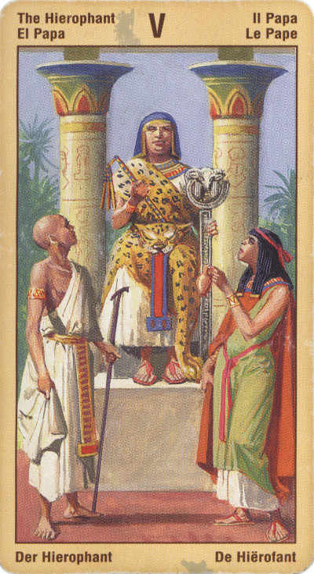

Жрец
Верховный Жрец - это мужской эквивалент Верховной Жрицы.
Как и она, он объединяет в себе и чувственную, и духовную силу. Они оба стоят перед каменными вратами, но если Жрица ассоциируется с ночью, с Луной, водой и прохладой, то Жрец ассоциируется с днем, с Солнцем, огнем и теплом. Верховный Жрец выступает в роли связующего звена с могуществом Солнца и мужской энергией.
В этой карте показаны два уровня великого ритуала или мистического брака: между небом и землей, и между Солнцем и Луной.
Смысл карты: прежде всего найди на ней себя.
Значение: В практических раскладах Первосвященник указывает главным образом на две вещи: процесс учения, обучения, и брак. Он дает положительный ответ на вопрос о возможности или необходимости учиться или учить (“Поступит ли сын в институт? – Да, поступит”, – “Должен ли я выступить на конференции?” – “Да, должен”), а также предвещает заключение брака, официального или мистического. Под мистическим браком понимается союз человека не только с другим человеком, но и человека с некоей высшей силой – с Богом, как то было у Моисея (“старый союз”, т.е. Ветхий Завет) и Иисуса (Новый Завет), или же с тем или иным искусством, когда человек посвящает себя, например, музыке, поэзии или астрологии.
Верховный Жрец представляет собой людей, книги, религиозные и духовные системы, призванные помочь человеку в его духовном поиске. Кроме того, Верховный Жрец представляет основные религии и Церкви, а также более широкий мир формальных знаний, образования и учебных заведений. В качестве альтернативы она может указывать на - значимость учителя или наставника в вашей жизни.
Жрец олицетворяет мир веры и глубочайшего доверия, основывающегося на непоколебимости избранных ценностей. Помимо того, эта карта символизирует путь этики и добродетели, то есть те моральные принципы, которыми определяются наши жизненные планы.
В отличие от миссии жрицы, пассивно проводящей ритмы, иерофант символизирует принцип активности, являясь созидателем нового пути.
Иерофант означает добрый совет, иногда обучение, стремление к знаниям. Благонамеренность и социальное согласие. Истинную Веру (вероисповедание неважно).
Это человек, умеющий учиться на чужих ошибках. Он предан какой-либо идее и вдохновенно служит ей, неся ее положительные результаты людям.
Если же вы решили узнать, что принесет вам в будущем та или иная ситуация, выпавший вам Аркан «Верховный жрец» укажет на необходимость довериться человеку, чьи советы помогут благополучно преодолеть препятствия на вашем пути.
Эта карта может также означать скорый брак (или просто союз) с интересующим вас лицом. Но вот определить, будет ли этот брак удачным, можно лишь исходя из сопутствующих Младших Арканов.
В перевернутом виде означает, что возможности учиться у человека сейчас нет, что брак не состоится, в том числе и мистический (учитель окажется лжеучителем, учение – лжеучением, или просто сам человек не готов); или же в данное время человеку не удастся посвятить себя искусству.
Для бизнесменов нет совета. Если Первосвященника вытянул бизнесмен, то возникает вопрос: зачем он вообще ввязался в этот бизнес?
В перевернутом положении карта иерофант - это символ клеветы, позора, сомнительных советов, приносящих зло как вам, так и окружающим. А также ложные факты, в основном, касающиеся материальных дел. Перевернутая позиция карты также может означать и чрезмерную свободу поведения, игнорирование правил хорошего тона, фальшивый взгляд на жизнь, эксцентричность, приносящую вред, а иногда и ненужную доброту к людям ее недостойным (добро и глупость не одно и то же). В семейном раскладе может означать леность и мечтательность. .
.
Обратите, однако, внимание и на такой случай: в негативном окружении или в перевернутом виде карта «Верховный жрец» сообщит вам, что на данный момент ситуация находится вне вашего контроля, так что самым лучшим будет положиться на судьбу и смиренно ждать, к какому финалу приведет вас развитие событий